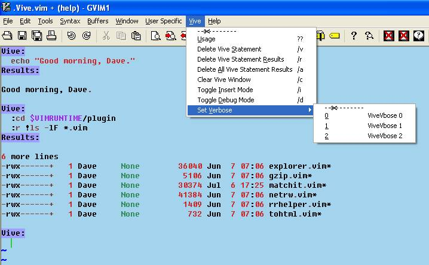
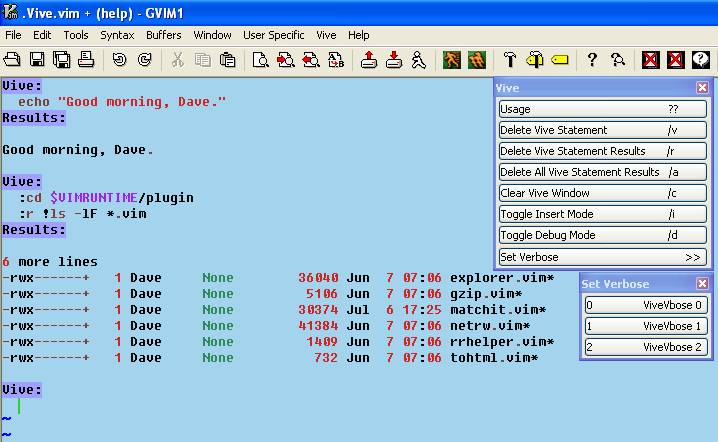
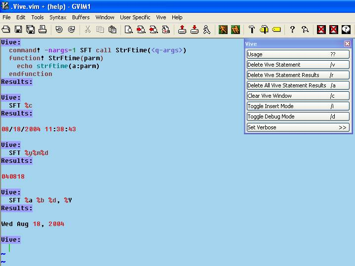
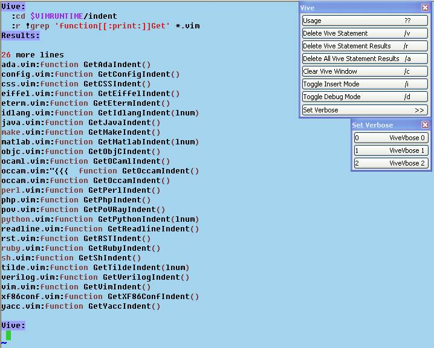
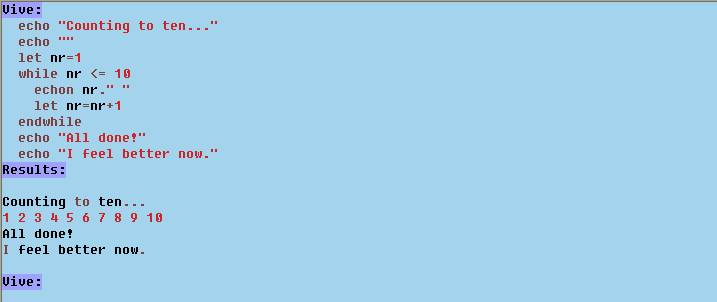

The plugin Vive.vim is a Vim interpreter and virtual executor. You type Vim script code into the Vive buffer and then, using the designated key stroke(s), indicate input completion. Vive takes this code and encapsulates it into a Vim script function and calls the function, capturing any output and placing it into the Vive buffer.
You invoke Vive via a user-defined command. The command takes several command line arguments, which tailor Vive to your tastes for a particular session. Global variables also exist to do the same tailoring and more for universal usage.
The syntax for the command is as follows.
Vive[ -p <prmpt>][ -r <rsltLbl>][ -t <mapSeq>][ -H <HLGrp>]
[ -i][ -v <vboseLvl>][ -h]
Where:
-p use <prmpt> as prompt string in Vive buffer. Default is ‘Vive:’.
-r use <rsltLbl> as result label in Vive buffer. Default is ‘Results:’.
-t use <mapSeq> as mapping key sequence used to indicate input completion. Default is <S-Enter>.
-H use <HLGrp> as highlight group name to be used for highlighting prompt and result label. Default is ‘DiffAdd’
-i toggles default insertion mode. Default is insert mode when Vive starts.
-v use <vboseLvl> when Vive starts. Default is 0. Levels are:
0 display captured output only
1 display function definition and captured output
2 display function definition only
-h display help message.
Vive has global variables that allow you to tailor its operation from a vimrc file. Following is a description of these variables.
g:ViveFile name of temporary file to use for the Vive buffer. Default is ~/.Vive.vim. The extension is optional as Vive sets filetype and syntax to vim.
g:ViveRsltFile name of temporary file to use for results of Vive function execution. Default is ~/.ViveRsltFile.
g:VivePrmpt string to use as the Vive prompt. Default is ‘Vive:’.
g:ViveRslt string to use as the Vive result label. Default is ‘Results:’.
g:ViveVerbose verbose level when Vive starts. Default is 0.
g:ViveHilite highlight group name used to highlight Vive prompt and result label. Default is DiffAdd.
g:ViveInterpret key sequence to which end of input for interpretation is mapped. Default is <S-Enter>, which works okay for Windows vim/gvim. For X, vim in an xterm seems to work okay if you set this variable to <A-Enter>. Cygwin bash running in cmd.exe can use <F1..12>, among other mappings.
g:ViveDVive key sequence for mapping deletion of current/last Vive statement. Default is /v.
g:ViveDRslt key sequence for mapping deletion of current/last Vive result. Default is /r.
g:ViveDAR key sequence for mapping deletion of all Vive results. Default is /a.
g:ViveCLS key sequence for mapping clear Vive buffer. Default is /c.
g:ViveModeInsert insertion mode on/off setting for Vive at start. Default is 1, insert mode.
g:ViveTI key sequence for mapping toggle insert mode. Default is /i.
g:ViveDebug debug mode on/off/setting for Vive at start. When on, :debug is prepended to the Vive function call before it is executed and the Vim debugger is entered. Default is 0, off.
g:ViveDBG key sequence for mapping toggle debug mode. Default is /d.
When run in gvim, Vive sets up a menu. It covers the basic command key strokes and setting verbose mode.

Vive is also one of the places in Vim where tearing off a menu is quite helpful/useful. Especially if you use your mouse a lot. Access to commands is just a point and click away.

Vive can be a versatile tool for the Vim user and script author.
Let’s say you have never used the strftime() builtin Vim function and would like to explore it. Well, you could just keep echo-ing the results of command line invocations to strftime() and take notes. Or you could redirect the command line output to a file and keep echo-ing the results of command line invocations to strftime(). Or you could write a function that calls strftime() iteratively with different parameters and captures the output to a file. Or you could use Vive.

Much less typing than any of the non-Vive methods, and the output is all saved in a scratchpad for you to review, save, or throw away!
Do you want those results from that command but they scroll into too many ‘More’ pages and saving is a tedious chore, besides, you have to remember to get rid of the output when you’re done? Just Vive it and save some time and hassle!

Or, do you just want to see what the output some code will produce will look like.

There are many ways you can use Vive to make your Vimming easier!
Let’s see, Vive’s a learning tool, a developing tool, a scratchpad, hmm… anything else? Oh, yes, Vive is help tag searching enabled! Just mouse click or Ctrl-] to jump to help on the selected word and Ctrl-T to jump back. And don’t forget debugging and easy cut/copy’n’paste.
Remember, too, that although the examples in this manual/tutorial are given in gvim, they work exactly the same in vim, just no menu!